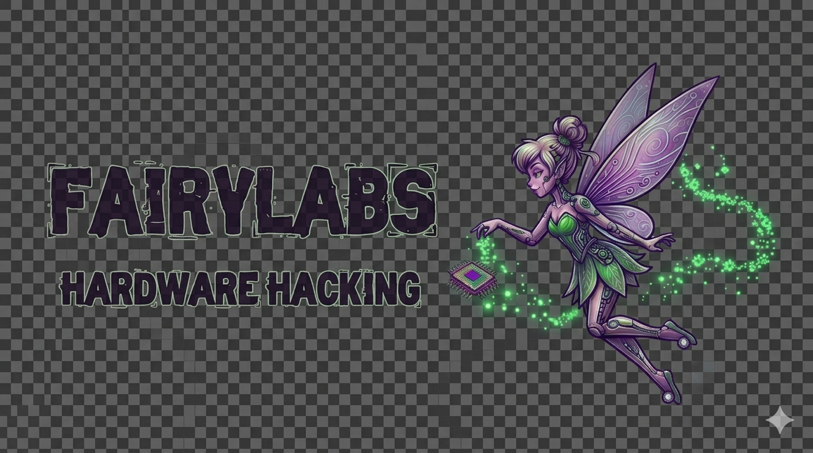

▲
SYSTEMS: BOOTING_
Welcome to the lab. We are building the future of hardware hacking, custom displays, and community-driven tech.
Our systems are currently booting up, and new inventory is being prepared.
© 2026 FAIRYLABS. ALL RIGHTS COMPROMISED.